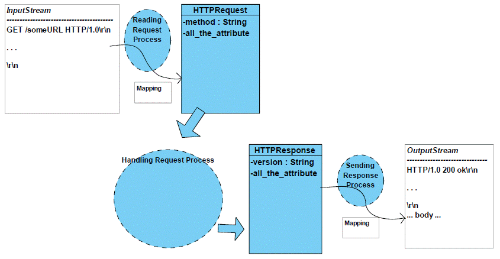
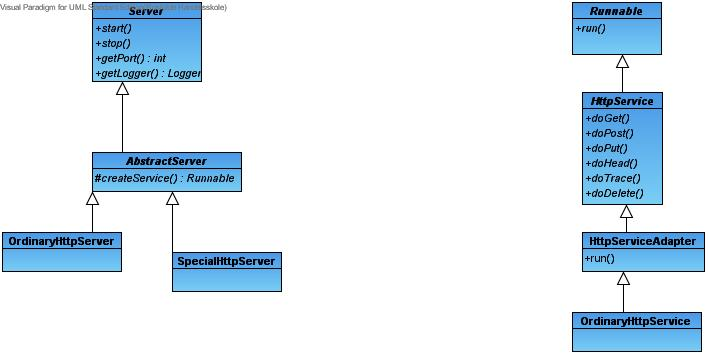

This exercise is part of the exam curriculum for the courses
In this assignment you are supposed to program you own HTTP server, also known as a web server.
Your will implement an HTTP server which implements a downscaled version of the original HTTP/1.0 protocol http://www.faqs.org/rfcs/rfc1945.html
However, your HTTP server will (although simple) work with ordinary browsers like Internet Explorer, Mozilla Firefox, Opera, etc.
The assignment is divided into a number of small steps. It is important that you try to complete step N before proceeding to step N + 1.
This assignment must be solved in groups: 2-(3) students / group.
Must be mailed to your PROG + NET teachers.
Please write who made the work, i.e. who was in the
group.
All code must be properly tested using JUnit. You are free to write the test before or after the code. However, it is important that you write the test code while writing the "real" code.
All code must be properly documented with Javadoc comments. Use NetBeans to help you make comments.
You must use Git with a remote repository for version control.
The repository can be hosted on GitHub https://github.com/ or elsewhere.
The first version of your HTTP server will be a very simple single threaded server: There will only be one thread taking care of everything:
The server must listen on some port like 80, 8080, 8888 or the like.
This first version of the HTTP server is for the server-part similar to the EchoServer
(the do-work part is different -> remember the accapting request, handling
request and sending responses)
see exercise SimpleServer1:
http://laerer.rhs.dk/peterl/2012e-cods-int/exercises/SimpleServers1.htm
including a solution
http://laerer.rhs.dk/peterl/2012e-cods-int/exercises/SimpleServers-solution.zip
.
Useful Java classes
nextLine
http://docs.oracle.com/javase/7/docs/api/java/util/Scanner.html#nextLine()
print
http://docs.oracle.com/javase/7/docs/api/java/io/PrintWriter.html#print(java.lang.String)
split
http://download.oracle.com/javase/7/docs/api/java/lang/String.html#split(java.lang.String)
In the web server you need to be able to copy the contents of a file to a socket. This small fragment might be useful
private static void copy(final InputStream input, final OutputStream output) throws IOException {
final byte[] buffer = new byte[1024];
while (true) {
int bytesRead = input.read(buffer);
if (bytesRead == -1) { break; }
output.write(buffer, 0, bytesRead);
}
}
An HTTP server needs a root catalog.
Some examples
Declare your root catalog like
private static final String ROOT_CATALOG = "C:/someDirectory"
C:,
since the contents of a local directory will change if you change
computer.You should unit test your server (and its individual parts) before and after each of the steps in this exercise.
Since this is the first time you test the server, you'll get a little guidance. The test creates a little HTTP client
WebServerTest.java (Zip'ed Java file) This test is quite hard! It tests a lot of features that your web-server probably does not have at the moment. Don't expect the test to be all-green - expect more red than green!
If you don't like the test to be red, you may make some of the test cases into comments.
Now it's time to clean your code:
The next version of your HTTP server will spin off multiple threads: One request generates one new thread.
Make the new thread class implement Runnable (don't extend Thread).
The server still accepts request and then creates a new thread to handle the request and send the response.
Advantages: If one client is slow in sending the request it does not block other clients.
Useful Java classes and interfaces:
Run the unit test to see that the server still works. VERY IMPORTANT!
To make the performance of the server better you could implement a pool of threads. Until now you have created a new thread for each new user (client), but it cost a lot of time and resources for the Operating System (i.e. the java virtual machine) to create new threads and again free resources from unused threads. So to make a better performance you could reuse the threads by creating a pool of threads instead:
Do the cleaning again
The next step is to apply logging to your HTTP server. You should log any event in the life of the server
Use the Java Logging API in the package java.util.logging http://download.oracle.com/javase/7/docs/api/java/util/logging/package-summary.html
If you are not familiar with the Logging API (which you probably aren't) you should make a separate file (with a main) where you try / experiment with the Logging API. When you have finished the experiments you can incorporate the knowledge you gained from the experiments into your server.
Before you go on to make the next version of your HTTP server we suggest a refactoring.
Put the code that reads respectively handles the request and sends response in separate class.
Don't forget to test you server before and after the refactoring.
All browsers can show plain HTML files, but most browsers can show other kinds of files as well. Examples: GIF and JPEG files.
Some browsers can call external viewers like Adobe Acrobat Readers for PDF files.
If the browser does not about the file type it will show a "Where to save this file" dialog.
The server must inform the client (in the HTTP response) about the content type to make all this work. Content-Type is a header in the HTTP response. http://www.faqs.org/rfcs/rfc1945.html section 10.5
The content type can be inferred from the extension of the file name. Some examples
| Filename extension | Content type |
| html | text/html |
| htm | text/html |
| doc | application/msword |
| gif | image/gif |
| jpg | image/jpeg |
| application/pdf | |
| css | text/css |
| xml | text/xml |
| jar | application/x-java-archive |
The default content type is application/octet-stream. Use it if no other content types are applicable, i.e. if you have a filename without extension or with an "unknown" extension.
More content types (sometimes called media types) can be found on http://www.iana.org/assignments/media-types/
Or alternatively do the programming yourself using the Java API:
If you are not familiar with Map and HashMap make a separate to experiment with Map and HashMap. Try to make a method like
public static String getContentType(String filename)
in your experiment file. When it works you can copy the method to your server.
Check the response status code with JUnit, i.e. let JUnit act as an HTTP client.
The HTTP client (browser) needs to be informed about the status of the HTTP response. This is done using the status response header.
http://www.faqs.org/rfcs/rfc1945.html section 6.1 shows the status response headers.
Check the response status codes with JUnit, i.e. let JUnit act as an HTTP client.
Until now we've shutdown the HTTP server by issuing Ctrl-C in the console window running the server. That not a very nice way to end a program, specially not if the program needs to do some clean-up before closing.
Ideas for graceful shutdown
When you want to shutdown your HTTP server you start another program (a shutdown client). This program connects to the shutdown port.
To make the server stop while it is waiting on accept() you must set the server socket to timeout after a certain period of time http://download.oracle.com/javase/7/docs/api/java/net/ServerSocket.html#setSoTimeout(int) The SocketException must be caught inside the server loop.
Useful Java API
Next step in the refactoring is to let the reading from an input stream build and
initilize an HTTP-Request object and then use this
object for the further handling in the server.
You should also save information for the output in a HTTP-Response object.
Information needed for sending response-lines back to the client (Browser) are
then obtained from the object.
Refactor your system to have Accepting Request, Handling Request and Sending Responses in seperate classes (e.g. ReadingRequest, HandlingRequest, SendingResponse)
Put the code for reading the request (i.e. read a request and build the information into an HTTP-Request object) in the ReadingRequest-class and sends response (i.e. retrieve information for the response from an HTTP-Response object) in the SendingResponse-class.

Don't forget to test you server before and after the refactoring.
URL's need encoding and decoding, since lot of characters are not allowed in URL's: space, æ, ø, å, etc.
Example (from a Google search for "Anders Børjesson")
A client (like a browser) automatically encodes the URL before sending it. When your server receives an URL it must be decoded.
Useful Java API
To make the application more easy to setup you need a configuration file. This will make it more easy to move the application from one computer to another and to make it more easy to change the configuration of the application ie. you do not have to change the code and recompile it.
The configuration file could contain following information:
Useful Java API
Again, make experiments before you start to use Properties in your server.
NetBeans can help you make a properties file: New → Other → Properties file
If a client send a request to the server without telling which files to get, the server normally send back a welcome file (normally the file named 'index.html').
The server should implement that it support this function, e.g. have a default filename if no filename are in the request. Or more advanced a sequence of files it try to use if no files are in the request. E.g. first try index.html then index.htm and then index.jsp
If a client send a request to a folder with no filename and with no welcome files, the server should response with the contents of the catalog including a Hyperlink to the files in the catalog, so the user just need to click on link to get the file.
A reference on how to make HTML links http://www.w3schools.com/html/html_links.asp
Useful Java API
In the HTTP protocol you are able to use the Methods GET, PUT, POST, HEAD and some more. You have already implement the GET Method. Look in the description of the HTTP (the RFC http://www.faqs.org/rfcs/rfc1945.html) and see how the requests PUT, POST and HEAD are specified and implement these.
In the current version the connection between filename extensions and content types are "hard coded" in you program text. Move the (extension, content type)-table to a text file - and read that text file when you startup the server.
To make use of your code in the future you should refactor your server-code.
The idea is that all what is general are separated in an interface e.g. Server which have been implemented in an abstract class e.g. AbstractServer. Then your HTTP-server could extend the AbstractServer-class and minimize its own code because some of the work are already coded in the AbstractServer class. If you now are to implement new servers it will be much easier - and you will later this autumn.
